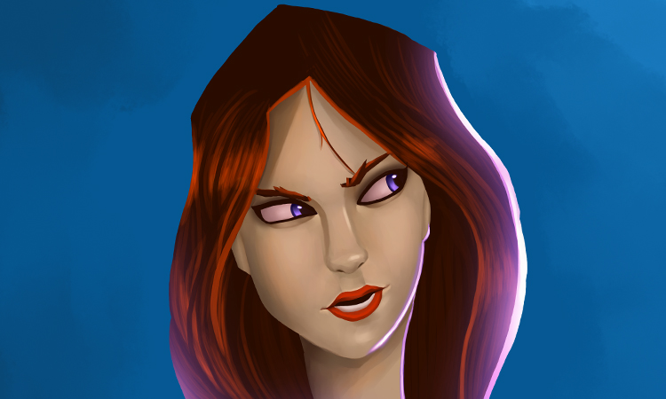
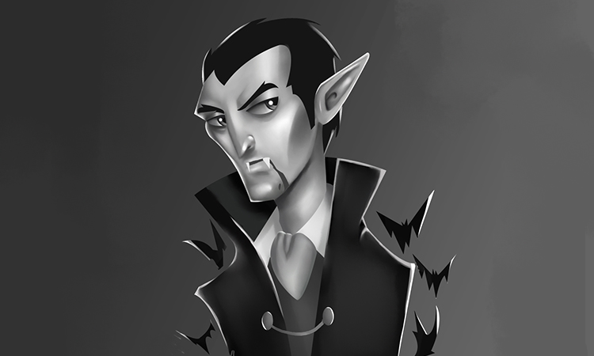
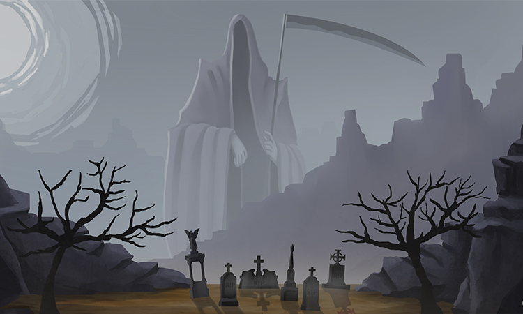
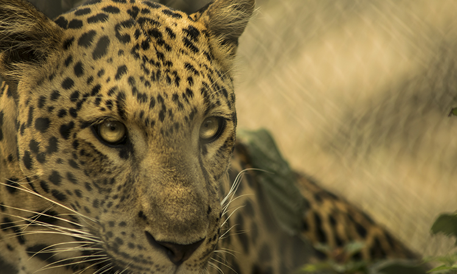
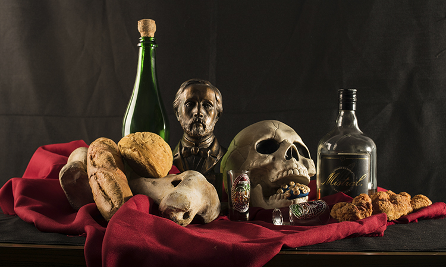
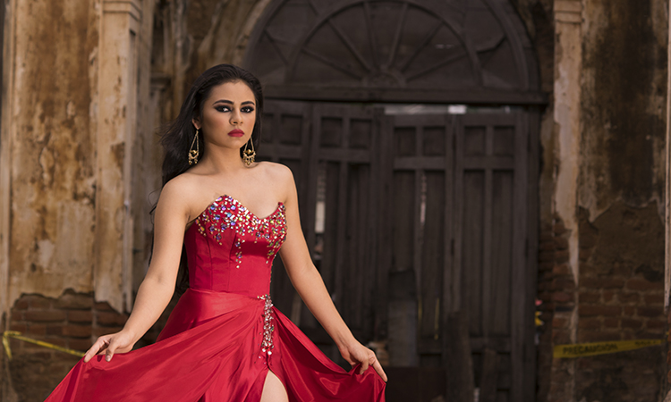

Jonathan Martinez
Mi nombre es Jonathan Alberto Martínez Pérez, me gusta la ilustración digital y tradicional tambien la fotografía, me gusta aprender acerca de los tópicos que me ayudan a crecer tanto profesionalmente como personalmente
Mi meta es llegar a ser un profesional mas completo en el ámbito que más me gusta, siendo este la industria del entretenimiento


RUTH
Proyecto personal para el crecimiento de habilidades en la ilustración digital. La ilustración se hizo con el fin de desarrollar una versatilidad en distintos estilos.

EL CONDE DRÁCULA
Ilustración realizada en talleres de Wip Academy impartida por Néstor Marinero, quien proporciono las líneas y flats.
Líneas: Kevin Martínez
Color: Jonathan Martínez Pérez


LA PARCA
Ilustración realizada para el festival de ilustración salvadoreño y terricola conocido como FIST

MASAI
Fotografía realizada en FURESA

BODEGÓN
Fotografía tomada con el fin de realizar una composición armoniosa e interesante

FOTOGRAFÍA DE MODELO
Fotografía tomada en Escuela de artes y oficios en el departamento de Santa Ana